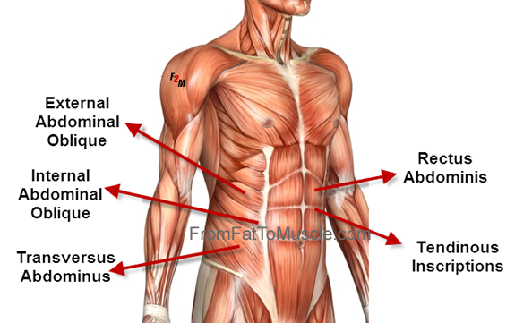
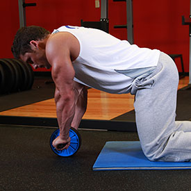
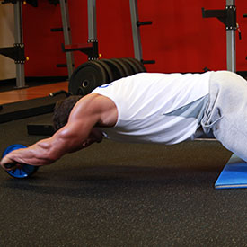
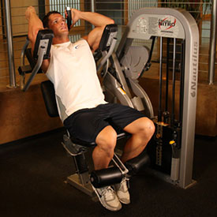
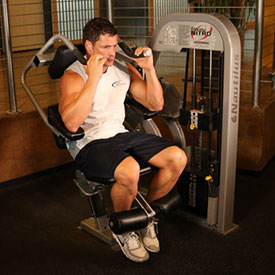
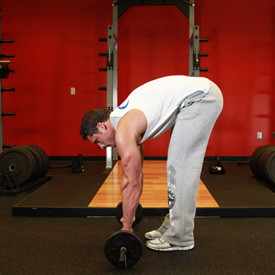
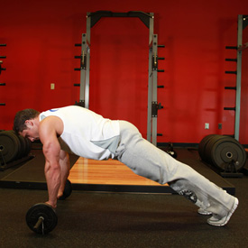
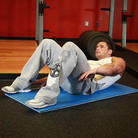
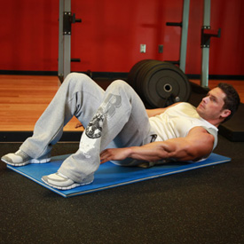

<!DOCTYPE html PUBLIC "-//W3C//DTD XHTML 1.0 Strict//EN" "http://www.w3.org/TR/xhtml1/DTD/xhtml1-strict.dtd">
<!--
Design by Free CSS Templates
http://www.freecsstemplates.org
Released for free under a Creative Commons Attribution 2.5 License

Name       : Open-Air
Description: A two-column, fixed-width design with dark color scheme.
Version    : 1.0
Released   : 20120818

-->
<html xmlns="http://www.w3.org/1999/xhtml"/>
<?php
session_start();
include('mygymdbConnect.php');
include('SignUp.php');
?>
<html>
    <head>
        <title> MyGym</title>
        <div style="position :absolute;top:20px;left:40px">
            <p><h2>MY<br/> 
                    GYM 
                    <br/></h2></p></div>
        <div style="position: absolute ;left:  200px; top: 20px;"> </div>
        <div style="position:absolute;top:37%;left:35%"/>
        <link href="http://fonts.googleapis.com/css?family=Oswald:400,300" rel="stylesheet" type="text/css" />         

        <link href="style.css" rel="stylesheet" type="text/css" media="screen" />
        <a href="home.php" style="text-decoration: none;color: black;font:serif;font-weight: bold;  ">Home |</a>
        <a href="About.html" style="text-decoration: none;color: black;font:serif;font-weight: bold;  ">About |</a>
        <a href="sign up.html" style="text-decoration: none;color: black;font:serif;font-weight: bold;  ">Sign up |</a>
        <a href="Activities.html" style="text-decoration: none;color: black;font:serif;font-weight: bold;  ">Activities |</a>
        <a href="Trainers.html" style="text-decoration: none;color: black;font:serif;font-weight: bold;  ">Trainers |</a>
        <a href="classes.html" style="text-decoration: none;color: black;font:serif;font-weight: bold;  ">Classes |</a>
        <a href="Training.html" style="text-decoration: none;color: black;font:serif;font-weight: bold;  ">Train |</a>   

    </head>

    <body>
        <div style="position: absolute;left: -300px">
            <table  cellpadding="10" cellspacing="10" height="400px" width="1200px">
                <tr><td></img></td>
                    <td><b>Description</b><br></br>The muscular system of the lower abdomen, including the pelvis, is separated from that of the chest by the muscular wall of the diaphragm-so critical to breathing-and lies somewhat exposed between the protective bones of the ribs above and the pelvic girdle behind. As such, skeletal muscles across the lower abdomen play a critical role in protecting the delicate organs within the abdomen, in addition to providing propulsion and stability
                        </table></div>
                        <div style="position: absolute;left: -200px;top: 500px" >
                            <table border="2"  cellpadding="10" cellspacing="10" align="center">
                                <tr><td><b>EXERCISES</b></td></tr>
                                <tr><td></img></br>
                                        </img></td>
                                    <td><b>Ab Roller</b>
                                        </br>1-Hold the Ab Roller with both hands and kneel on the floor.
                                        </br>2-Now place the ab roller on the floor in front of you so that you are on all your hands and knees (as in a kneeling push up position). This will be your starting position.
                                        </br>3-Slowly roll the ab roller straight forward, stretching your body into a straight position. Tip: Go down as far as you can without touching the floor with your body. Breathe in during this portion of the movement.
                                        </br>4-After a pause at the stretched position, start pulling yourself back to the starting position as you breathe out. Tip: Go slowly and keep your abs tight at all times.
                                    </td>
                                </tr>
                                <tr><td></img></br>
                                        </img></td>
                                    <td><b>Ab Crunch Machine</b>
                                        </br>1-Select a light resistance and sit down on the ab machine placing your feet under the pads provided and grabbing the top handles. Your arms should be bent at a 90 degree angle as you rest the triceps on the pads provided. This will be your starting position.
                                        </br>2-At the same time, begin to lift the legs up as you crunch your upper torso. Breathe out as you perform this movement. Tip: Be sure to use a slow and controlled motion. Concentrate on using your abs to move the weight while relaxing your legs and feet.
                                        </br>3-After a second pause, slowly return to the starting position as you breathe in.
                                        </br>4-Repeat the movement for the prescribed amount of repetitions.
                                    </td>
                                </tr>
                                <tr><td></img></br>
                                        </img></td>
                                    <td><b>Barbell Ab Rollout</b>
                                        </br>1-For this exercise you will need to get into a pushup position, but instead of having your hands of the floor, you will be grabbing on to an Olympic barbell (loaded with 5-10 lbs on each side) instead. This will be your starting position.
                                        </br>2-While keeping a slight arch on your back, lift your hips and roll the barbell towards your feet as you exhale. Tip: As you perform the movement, your glutes should be coming up, you should be keeping the abs tight and should maintain your back posture at all times. Also your arms should be staying perpendicular to the floor throughout the movement. If you don't, you will work out your shoulders and back more than the abs.
                                        </br>3-After a second contraction at the top, start to roll the barbell back forward to the starting position slowly as you inhale.
                                        </br>4-Repeat for the recommended amount of repetitions.
                                    </td>
                                </tr>
                                <tr><td></img><br></br>
                                        </img>  </td>
                                    <td><b>Alternate Heel Touchers</b>
                                        </br>1-Lie on the floor with the knees bent and the feet on the floor around 18-24 inches apart. Your arms should be extended by your side. This will be your starting position.
                                        </br>2-Crunch over your torso forward and up about 3-4 inches to the right side and touch your right heel as you hold the contraction for a second. Exhale while performing this movement.
                                        </br>3-Now go back slowly to the starting position as you inhale.
                                        </br>4-Now crunch over your torso forward and up around 3-4 inches to the left side and touch your left heel as you hold the contraction for a second. Exhale while performing this movement and then go back to the starting position as you inhale. Now that both heels have been touched, that is considered 1 repetition.
                                        </br>5-Continue alternating sides in this manner until all prescribed repetitions are done.

                                </tr>
                            </table>
                        </div>
                        </body>
                        </html>